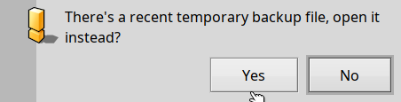

Topics
Interface
The interface
A quick look at the interface:

File
Translation
View
Settings
About

This occurs when the backup file is more recent than the original file. Each time you modify a string or its metadata, those changes are saved to a backup file (temp.po). This ensures that you do not lose your work in the event of an application crash, system failure, or power outage.In the Translation menu you will find some of the most common commands you will use with this program:
Copy from Source (shortcut: Ctrl+Shift+C): Copies the source string to the translation field.
Edit Comment: (function available double-clicking the list entry) allows you to add and save comments for the selected entries.
Done and Next (shortcut: Ctrl + Down/Up): Saves the translation to the backup file and opens the next entry.
Mark/Unmark Fuzzy (shortcut: Ctrl+B): Marks the list entry as a fuzzy translation or unmarks it.
Previous/Next without Saving: Allows you to navigate to the next or previous entry without saving any changes. If you want to restore the translation to its previous state when you selected the entry, press ESC.
PO Properties: Displays the PO metadata when a .po file is opened.
PO Header: Displays the PO header, usually containing the file description, when a .po file is opened.
Find Source: This feature allows you to search for text across all entries (source strings).
Find/Replace Translation: Enables you to search for text in the translated entries and eventually replace them at your will.
In the View menu, you can choose which types of entries to display in the list.
The Settings menu includes several options:
General: Adjust startup settings, such as user permissions for handling the opened .po file and checking the file's MIME type. Here you can choose the language for application localization.
User Settings: Important configuration, as these informations will be saved to the .po file.
Spellcheck: Here, you can enable or disable spell check, select the Hunspell/MySpell dictionary, and include or exclude certain characters or character categories to enhance spell-check functionality. Below these fields, there is a convenient text entry that shows the character category of the keys you press.
Translation Memory: In this configuration window, you can enable or disable the translation memory (a convenient database that stores previously translated content, allowing you to reuse terminology and speed up future localizations), configure a local translation memory server, and specify the address and port for the translation memory service. The "header" indicates the buffer size used for transmission, and you can enable a translation memory log.
Source String List: When a .po file is loaded, this displays a list of original language (source) strings to translate.
Translation Memory List: If the translation memory is enabled and properly configured, suggestions will appear here when you select a source string from the list.
Suggestion Preview: When you select a suggestion, its text, including line breaks, double spaces, and differing spacing (which may be difficult to detect visually), will be shown here.
Local TM Server Status: This string informs you about the state of the built-in translation memory server.
Animated Status Indicator: This shows that the program is functioning properly and that periodic checks are in progress.
Spelling Error Indicator: A box (black empty, green checkmark, red cross) will flag any spelling mistakes in the translated text.
Progress Bar: Indicates your progress in translating the entire file.
Comments Tabs: Here, you will find developers' comments, context comments, and any personal comments you may have for each string to translate.
Line Number: When you select a string from the source string list, this will display the line number of the corresponding translation entry in the .po file.
Translation Tabs: When you select an entry from the source string list, this area shows the translation (if already completed). Any changes will be saved automatically when you select another entry. Press ESC to revert changes. This tab view can have multiple tabs if the source requires plural forms (the number of tabs depends on the language).
Source String Tabs: When you select an entry from the source string list, this field displays the complete source text, along with graphical indications for new lines (carriage returns), double spaces, various types of spacing, tabulations, etc. This tab view can have one or two tabs depending on whether a plural form is required.
For an in-depth description of the interface click on: Interface in depth